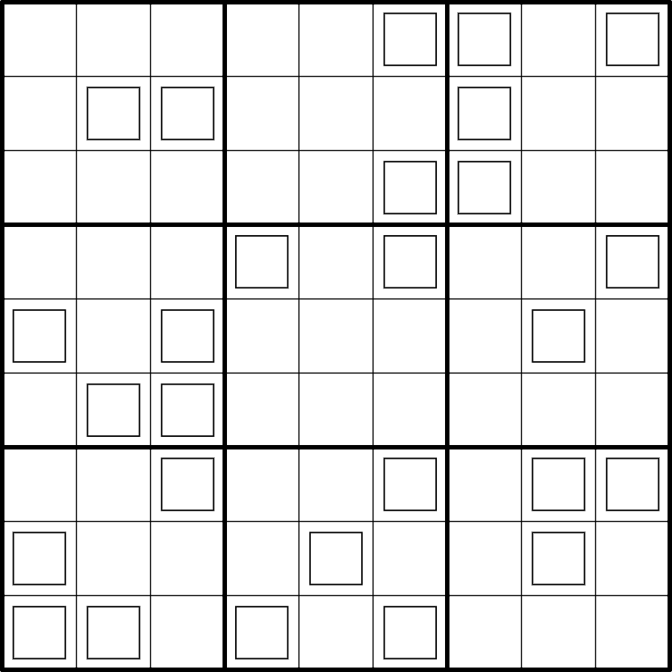

Smaragden - ⭐️⭐️⭐️

LINK
REGELS:
- Standaard sudoku: Plaats de cijfers van 1 t/m 9 eenmaal in elke rij, kolom, en 3x3 blok.
- Custom: Het cijfer in een vierkantje is gelijk aan het rij-, kolom-, of bloknummer van dat vierkantje (rij 1 t/m 9 van boven naar beneden, kolom 1 t/m 9 van links naar rechts, en blok 1 t/m 9 van linksboven naar rechtsonder in leesvolgorde).